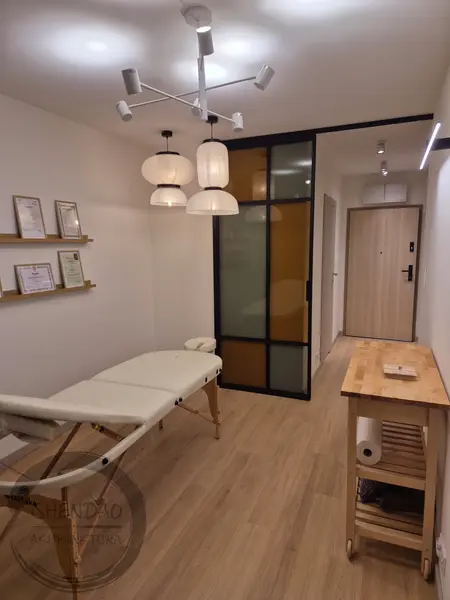
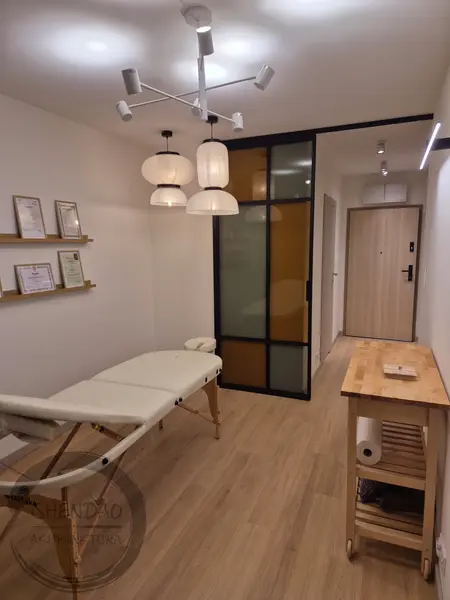

Cześć! Jestem Magda i zapraszam Cię do mojego kameralnego gabinetu akupunktury w Poznaniu przy Rynku Wildeckim. Umów wizytę:
600 704 120
 

{kind=link}


Akupunktura
Na co pomaga?
Akupunktura jest uznaną przez Światową Organizację Zdrowia (WHO) metodą leczenia, rekomendowaną w ponad 100 wskazaniach, m.in.:
- wszelkie dolegliwości bólowe np. bóle mięśni, stawów, łokieć tenisisty, łokieć golfisty, rwa kulszowa, sztywność karku, bóle RZS;
- migreny, bóle głowy, bruksizm, szumy uszne;
- stres, zaburzenia emocjonalne, problemy z koncentracją, stany lękowe, depresja, bezsenność, nadpobudliwość;
- problemy hormonalne, ginekologiczne, menopauzalne, bolesne miesiączki, PMS, mięśniaki, endometrioza, PCOS, wsparcie w połogu i laktacji;
- przewlekłe zmęczenie, potliwość, duszności, nadciśnienie;
- obniżona odporność, częste przeziębienia, zapalenie zatok;
- infekcje dróg moczowych, nietrzymanie moczu, kamica moczowa;
- problemy skórne, alergie;
- problemy trawienne, zaparcia, biegunki, wzdęcia, mdłości, refluks, zgaga, zapalenie błony śluzowej żołądka, wrzody, jelito drażliwe, nadwaga;
- praca z blizną po operacji.
Jak działa i czy jest bezpieczna?
Skuteczność i bezpieczeństwo stosowania akupunktury potwierdzają badania i publikacje naukowe. Działanie akupunktury odbywa się m.in. poprzez wpływ na układ nerwowy, pobudzenie syntezy neurohormonów (endorfiny, serotoniny), wzmocnienie układu odpornościowego.
Akupunktura pracuje nie tylko z ciałem, narządami wewnętrznymi, ale przede wszystkim z układem nerwowym oraz emocjami zapisanymi w ciele.
Akupunktura może być stosowana zarówno jako samodzielna metoda, jak i terapia wspomagająca dla farmakoterapii, psychoterapii, fizykoterapii.
Efekty terapii akupunkturą to m.in. zmniejszenie poziomu stresu, łatwiejszy relaks i zdolności adaptacyjne, poprawa jakości snu, wzrost witalności i pozytywnego nastawienia do życia, chęć działania, zmiana szkodliwych nawyków.
Wizyta
Zabieg
Zabieg akupunkturowy polega na wprowadzaniu cienkich, jednorazowych, sterylnych igieł w określone punkty na ciele w celu przywrócenia swobodnego przepływu energii Qi w organiźmie.
Stres, emocje, złe nawyki żywieniowe czy styl życia prowadzić mogą do zablokowania lub nierównowagi energii Qi w ciele, co może się manifestować jako dolegliwości bólowe, zaburzenia trawienne, problemy ginekologiczne.
Stymulując punkty akupunkturowe, wywołuję zmianę w samopoczuciu fizycznym i psychicznym oraz wspieram organizm w przywracaniu balansu i procesie leczenia.
Igły akupunkturowe są bardzo małe – grubości zazwyczaj 0,2 mm, ich wbicie nie jest bolesne, natomiast przez chwilę możesz odczuwać mrowienie lub rozpieranie, odczucie delikatnego prądu wzdłuż przebiegu meridianu.
Aby dobrać odpowiednie punkty w trakcie terapii akupunkturą i ocenić które obszary w organizmie wymagają wsparcia, przeprowadzam szczegółowy wywiad dotyczący objawów i dolegliwości, stylu życia, nawyków żywieniowych oraz towarzyszących Ci emocji. Oprócz tego zbadam Ci puls, przyjrzę się Twojej twarzy i językowi oraz przeprowadzę palpację brzucha.
W swojej pracy korzystam z akupunktury, baniek ogniowych, gua shy, moksoterapii, lamp TDP. Możesz też liczyć na zalecenia żywieniowe i ziołowe.
Cennik
Pierwsza wizyta
200 zł
Kolejna wizyta
150 zł
Płatność przyjmuję gotówką lub BLIKiem na telefon.
Liczba i częstotliwość zabiegów jest dobierana indywidualnie. Efekty terapeutyczne uzależnione są od czasu trwania i nasilenia objawów chorobowych.
O mnie
Moja ścieżka ShenDao
Pojęcie Shen Dao w medycynie chińskiej odnosi się do "Drogi Ducha" lub "Ścieżki Ducha". Termin ten składa się z dwóch znaków: Shen, co oznacza ducha, świadomość, czy też aspekty psychiczne istoty ludzkiej, oraz Dao, co tłumaczy się jako droga lub ścieżka.
W medycynie chińskiej duży nacisk kładzie się na holistyczne podejście do zdrowia, które obejmuje równowagę i harmonię między ciałem, umysłem i duchem. Shen w tym kontekście odnosi się nie tylko do zdrowia psychicznego i emocjonalnego, ale jest także uważane za kluczowy element wpływający na ogólne zdrowie i dobrostan. Dao jest wzorcem moralnym, drogą, którą Niebo odcisnęło w sercu człowieka. Dao oznacza właściwą drogę życia, dzięki której możemy realizować swój potencjał.
To, czym zajmuję się dzisiaj, wynika z mojej osobistej ścieżki Dao, wielu potknięć i wybojów, za które jestem wdzięczna, bo popchnęły mnie w stronę Medycyny Chińskiej, która jest ze mną od kilkunastu lat. Wpierw doświadczałam jej jako pacjentka a od 2017 roku jako studentka.
Z radością w sercu mogę dziś wspierać Cię w Twojej podróży ku lepszemu zdrowiu. Towarzyszyć Ci z uważnością i współczuciem w doświadczanych trudnościach, obserwując i słuchając.
Moim celem jest profilaktyka oraz wspieranie Cię w powrocie do zdrowia poprzez uruchomienie naturalnych sił organizmu, by przeżywać życie z lekkością w sercu, ciele i umyśle.
Moja wiedza
Ważna jest dla mnie relacja terapeutyczna pełna zaufania, poczucia bezpieczeństwa i troski.
Jestem członkiem Polskiego Towarzystwa Akupunkturzystów Zawodowych. Odbyłam następujące szkolenia z zakresu akupunktury i terapii naturalnych:
- Applied I Ching Acupuncture Level 2, Jonathan Shubs, Szkoła Akupunktury Tradycyjnej, Bydgoszcz
- Ginekologia według Klasycznej Medycyny Chińskiej, Li Jie, Anna Czarzasta, Natalia Kołodziej-Wojciechowska, Szkoła TOMO, Gdańsk
- Zawansowany kurs akupunktury brzucha i pępka, Dave Shipsey, Bydgoszcz
- Unified Acupuncture Theory Applied I Ching Ba Gua Level 1, Jonathan Shubs, Szkoła Akupunktury Tradycyjnej, Bydgoszcz
- Unified Acupuncture Theory Clinical Applications: Sa’am 4 Needles 5 Elements Using Abdominal Palpation - Jonathan Shubs, Healthy Seminars
- Diagnoza z pulsu – Bożena Olszowska, ProHumane, Wrocław
- Diagnoza z pulsu – Bartosz Chmielnicki, Orkiszowe Pola, Poznań
- Diagnostyka różnicowa, diagnoza z pulsu, języka i twarzy – Claude Diolosa, Avicenna Polska, Kraków/Asyż
- Zaburzenia psychiczne, psychoemocjonalne i duchowe według TCM – Sohial Farzam, Szkoła Akupunktury Tradycyjnej, Bydgoszcz
- Unified Acupuncture Theory Foundations – Jonathan Shubs, Szkoła Akupunktury Tradycyjnej, Bydgoszcz
- 3-letnia Szkoła Akupunktury Tradycyjnej im. Michała Boyma, Bydgoszcz
- Połączenie Zachodniego Ziołolecznictwa, Medycyny Chińskiej i Fitofarmakologii – Jeremy Ross, TOMO, Gdańsk
- Kurs zawodowy Zielarz - Fitoterapeuta oraz Kurs Zielarsko-Medyczny z Zakresu Towaroznawstwa Zielarskiego – Instytut Zielarstwa Polskiego i Terapii Naturalnych, Warszawa
- Kurs Dietetyki Profilaktycznej i Leczniczej wg. Medycyny Chińskiej – Agnieszka Krzemińska, Orkiszowe Pola, Poznań
Najcenniejszą nauką są dla mnie spotkania z drugim człowiekiem.
Kontakt
ShenDao - Akupunktura Magdalena Gaertig
ul. Bergera 1A/1, 61-542 Poznań
Wiadomość: SMS | WhatsApp
Telefon: +48 600 704 120 (oddzwaniam jeśli nie odbiorę)
Email:
Strona: https://shendao.poznan.pl
Google:
Facebook:
Dojazd
![Tramwaj:](data:image/svg+xml,%3Csvg width='35' height='26' viewBox='0 0 35 26' fill='none' xmlns='http://www.w3.org/2000/svg'%3E%3Cpath d='M0 24.2322H33.8845V26.01H0V24.2322ZM30.8126 21.7467L0 21.7422V12.1318H1.91297V15.3806C1.91297 15.5947 2.08987 15.7709 2.30327 15.7709H8.3437C8.55823 15.7709 8.73512 15.5947 8.73512 15.3806V12.1318H10.6528V19.4898C10.6528 19.7129 10.8336 19.8988 11.0623 19.8988H14.2363C14.4637 19.8988 14.6451 19.7129 14.6451 19.4898V12.1318H15.8097V19.4898C15.8097 19.7129 15.9949 19.8988 16.2184 19.8988H19.392C19.6205 19.8988 19.8021 19.7129 19.8021 19.4898V12.1318H21.7656V15.3851C21.7656 15.608 21.9522 15.7953 22.1757 15.7953H31.0591L27.6577 10.7443H22.1757C22.1712 10.7443 22.1712 10.7443 22.1656 10.7443H19.4067C19.4021 10.7443 19.3965 10.7443 19.392 10.7443H16.2184H16.2139H14.2453C14.2408 10.7443 14.2408 10.7443 14.2363 10.7443H11.0623C11.0571 10.7443 11.0526 10.7443 11.0526 10.7443H8.35384C8.34933 10.7443 8.3437 10.7443 8.3437 10.7443H2.30327H0V9.12115H28.0111C28.579 9.12115 29.1045 9.22346 29.5466 9.84632L33.9638 16.7291H31.6322L32.7902 18.6754H34.0659C33.972 20.3459 32.8887 21.7467 30.8126 21.7467ZM16.5391 4.82041L15.3995 3.63869L19.1459 8.77855e-06L23.4884 4.28633L19.7134 7.95228L18.5686 6.77056L21.1378 4.27619L19.1358 2.29855L16.5391 4.82041Z' fill='%23434747'/%3E%3C/svg%3E%0A) 3 minuty pieszo od przystanku tramwajowego Rynek Wildecki, linie: 2, 9, 10, 19.
3 minuty pieszo od przystanku tramwajowego Rynek Wildecki, linie: 2, 9, 10, 19.![Pociąg/autobus:](data:image/svg+xml,%3Csvg xmlns='http://www.w3.org/2000/svg' width='88px' height='88px' viewBox='0 0 88 88'%3E%3Cpath fill='%233C4043' d='M44,7.33333333 C29.3333333,7.33333333 14.6666667,9.16666667 14.6666667,22 L14.6666667,56.8333333 C14.6666667,63.91 20.4233333,69.6666667 27.5,69.6666667 L22,75.1666667 L22,77 L30.1766667,77 L37.51,69.6666667 L51.3333333,69.6666667 L58.6666667,77 L66,77 L66,75.1666667 L60.5,69.6666667 C67.5766667,69.6666667 73.3333333,63.91 73.3333333,56.8333333 L73.3333333,22 C73.3333333,9.16666667 60.2066667,7.33333333 44,7.33333333 L44,7.33333333 Z M27.5,62.3333333 C24.4566667,62.3333333 22,59.8766667 22,56.8333333 C22,53.79 24.4566667,51.3333333 27.5,51.3333333 C30.5433333,51.3333333 33,53.79 33,56.8333333 C33,59.8766667 30.5433333,62.3333333 27.5,62.3333333 L27.5,62.3333333 Z M40.3333333,36.6666667 L22,36.6666667 L22,22 L40.3333333,22 L40.3333333,36.6666667 L40.3333333,36.6666667 Z M47.6666667,36.6666667 L47.6666667,22 L66,22 L66,36.6666667 L47.6666667,36.6666667 L47.6666667,36.6666667 Z M60.5,62.3333333 C57.4566667,62.3333333 55,59.8766667 55,56.8333333 C55,53.79 57.4566667,51.3333333 60.5,51.3333333 C63.5433333,51.3333333 66,53.79 66,56.8333333 C66,59.8766667 63.5433333,62.3333333 60.5,62.3333333 L60.5,62.3333333 Z'/%3E%3C/svg%3E) 15 minut pieszo od dworca Poznań Główny
15 minut pieszo od dworca Poznań Główny Strefa płatnego parkowania przy ul. Bergera
Strefa płatnego parkowania przy ul. Bergera